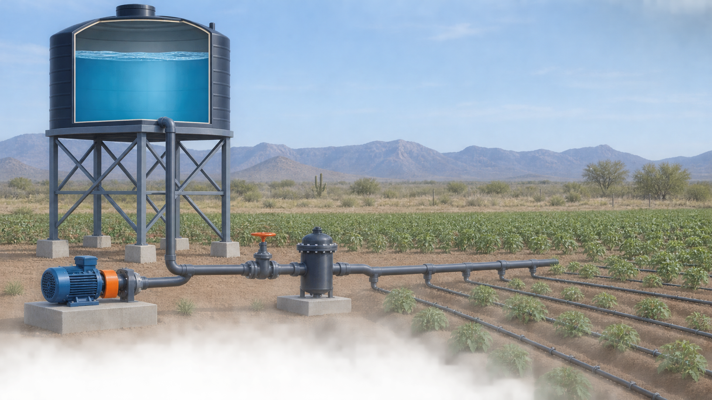

Unidad I
Hidrostática
Agua en reposo: propiedades, presión, medición y empuje sobre superficies de interés agrícola.
Abrir unidad ILibro académico abierto
Del comportamiento del agua a las decisiones sobre almacenamiento, conducción y riego. Aprende desde los conceptos iniciales mediante esquemas, ecuaciones explicadas, ejemplos y práctica.
Cada unidad tiene su propia portada y temas organizados como capítulos. Puedes avanzar en orden o consultar un concepto específico.

Agua en reposo: propiedades, presión, medición y empuje sobre superficies de interés agrícola.
Abrir unidad IAgua en movimiento: velocidad, clasificación de flujos, líneas de corriente y caudal en tomas y canales.
Abrir unidad IIConservación aplicada: continuidad, Euler, Bernoulli y cantidad de movimiento en conducciones agrícolas.
Abrir unidad III